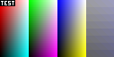
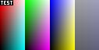
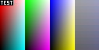
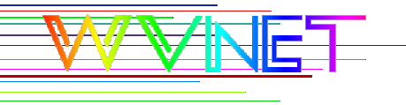

This test suite was grabbed from http://wvnvaxa.wvnet.edu/vmswww/bmp.html.
| BMP | PNG | |
|---|---|---|
| 1 bit (2 color) | |
|
| 4 bit | |
|
| 8 bit | |
|
| 16 bit | |
 |
| 24 bit | |
|
| 32 bit | |
 |
| 4 bit compressed | |
|
| 8 bit compressed | |
|
| 16 bit 555 bitfield | |
|
| 16 bit 565 bitfield | |
 |
| 32 bit 888 bitfield | |
|
| 32 bit 888 bitfield version 4 | ||
| 32 bit version 5 | ||
| 32 bit transparent version 4 |  |
Note that as of December 2005, Mozilla and Internet Explorer do not support transparent BMP images.
The images (except for the last three and the OS/2 version 2 image) are from Jason Summer's BMP Suite.